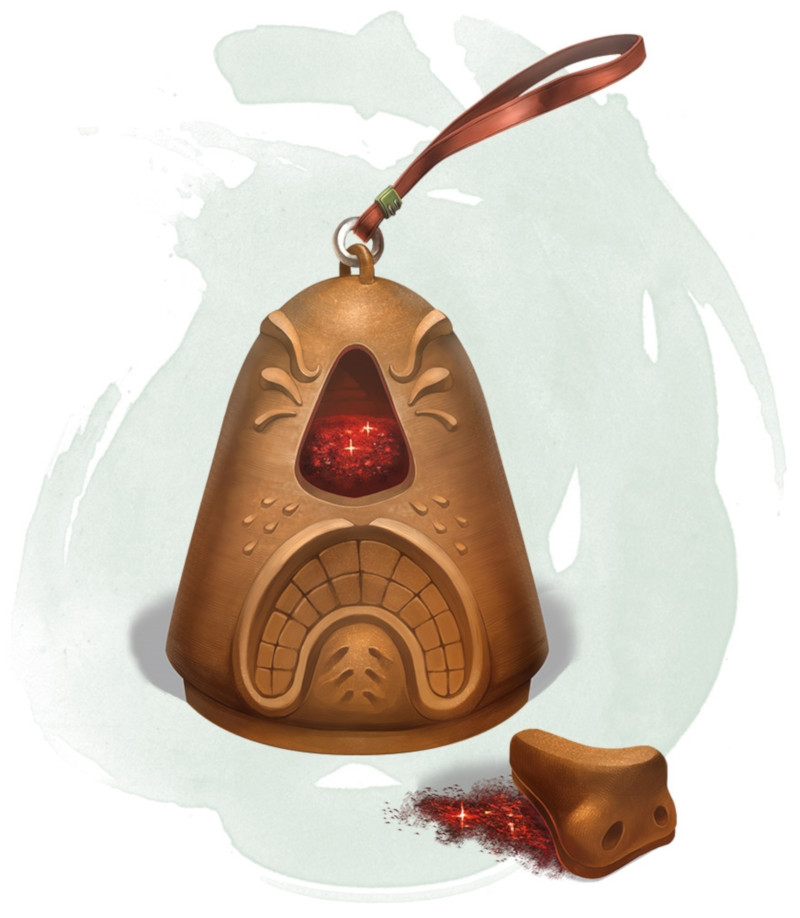

Dust of Sneezing and Choking
Wondrous item, uncommon
Found in a small container, this powder resembles very fine sand. It appears to be dust of disappearance, and an identify spell reveals it to be such. There is enough of it for one use.
When you use an action to throw a handful of the dust into the air, you and each creature that needs to breathe within 30 feet of you must succeed on a DC 15 Constitution saving throw or become unable to breathe, while sneezing uncontrollably. A creature affected in this way is incapacitated and suffocating. As long as it is conscious, a creature can repeat the saving throw at the end of each of its turns, ending the effect on it on a success. The lesser restoration spell can also end the effect on a creature.
When you use an action to throw a handful of the dust into the air, you and each creature that needs to breathe within 30 feet of you must succeed on a DC 15 Constitution saving throw or become unable to breathe, while sneezing uncontrollably. A creature affected in this way is incapacitated and suffocating. As long as it is conscious, a creature can repeat the saving throw at the end of each of its turns, ending the effect on it on a success. The lesser restoration spell can also end the effect on a creature.
Dungeon Master´s Guide (SRD)
